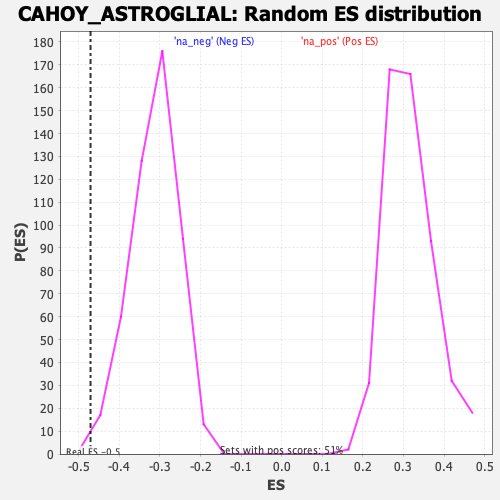

| | | Dataset | DE_genes |
| Phenotype | NoPhenotypeAvailable |
| Upregulated in class | na_neg |
| GeneSet | CAHOY_ASTROGLIAL |
| Enrichment Score (ES) | -0.47102326 |
| Normalized Enrichment Score (NES) | -1.5083815 |
| Nominal p-value | 0.0040816325 |
| FDR q-value | 0.063274205 |
| FWER p-Value | 0.542 |
Table: GSEA Results Summary
 Fig 1: Enrichment plot: CAHOY_ASTROGLIAL
Fig 1: Enrichment plot: CAHOY_ASTROGLIAL
Profile of the Running ES Score & Positions of GeneSet Members on the Rank Ordered List
| SYMBOL | RANK IN GENE LIST | RANK METRIC SCORE | RUNNING ES | CORE ENRICHMENT | | 1 | FMOD | 90 | 23.146 | 0.0518 | No |
| 2 | COL8A1 | 466 | 13.288 | 0.0648 | No |
| 3 | SLC24A3 | 822 | 10.526 | 0.0721 | No |
| 4 | COA6 | 837 | 10.405 | 0.0967 | No |
| 5 | PTRH1 | 1322 | 8.033 | 0.0913 | No |
| 6 | HMOX1 | 1409 | 7.760 | 0.1058 | No |
| 7 | TDG | 1935 | 6.231 | 0.0938 | No |
| 8 | COL5A1 | 2220 | 5.597 | 0.0928 | No |
| 9 | C1QTNF1 | 2371 | 5.309 | 0.0980 | No |
| 10 | UGT1A1 | 2664 | 4.759 | 0.0945 | No |
| 11 | GPNMB | 3535 | 3.490 | 0.0581 | No |
| 12 | AKR1B10 | 3607 | 3.389 | 0.0627 | No |
| 13 | LCN2 | 3900 | 3.046 | 0.0550 | No |
| 14 | PSRC1 | 3998 | 2.934 | 0.0571 | No |
| 15 | GNA14 | 5425 | 1.599 | -0.0126 | No |
| 16 | MORC4 | 5551 | 1.502 | -0.0154 | No |
| 17 | C3 | 5771 | 1.365 | -0.0234 | No |
| 18 | GLIPR2 | 6328 | 1.032 | -0.0496 | No |
| 19 | CCNG1 | 6446 | 0.963 | -0.0533 | No |
| 20 | PKP2 | 6502 | 0.939 | -0.0539 | No |
| 21 | NUAK2 | 7361 | 0.540 | -0.0969 | No |
| 22 | FOXJ1 | 7634 | 0.436 | -0.1099 | No |
| 23 | KLHL21 | 8215 | 0.254 | -0.1392 | No |
| 24 | CCDC96 | 8367 | 0.211 | -0.1465 | No |
| 25 | TAGLN | 8896 | 0.089 | -0.1736 | No |
| 26 | CASP1 | 8994 | 0.065 | -0.1784 | No |
| 27 | ATP8A1 | 9521 | -0.029 | -0.2055 | No |
| 28 | SERPINE1 | 9529 | -0.031 | -0.2058 | No |
| 29 | P2RY1 | 9823 | -0.082 | -0.2207 | No |
| 30 | CCDC28B | 10171 | -0.169 | -0.2382 | No |
| 31 | SLF2 | 10227 | -0.181 | -0.2406 | No |
| 32 | GPHN | 10517 | -0.253 | -0.2550 | No |
| 33 | DYSF | 10788 | -0.322 | -0.2681 | No |
| 34 | DEFB1 | 11025 | -0.392 | -0.2794 | No |
| 35 | RHOD | 11045 | -0.401 | -0.2794 | No |
| 36 | MXRA8 | 11145 | -0.431 | -0.2834 | No |
| 37 | ACTA2 | 11504 | -0.535 | -0.3006 | No |
| 38 | COL4A6 | 11632 | -0.581 | -0.3058 | No |
| 39 | AEBP1 | 11888 | -0.659 | -0.3173 | No |
| 40 | TBC1D2B | 12176 | -0.752 | -0.3303 | No |
| 41 | FAS | 12254 | -0.787 | -0.3324 | No |
| 42 | ANXA4 | 12263 | -0.790 | -0.3309 | No |
| 43 | MRPS6 | 12315 | -0.812 | -0.3315 | No |
| 44 | LOX | 12391 | -0.849 | -0.3333 | No |
| 45 | PSTPIP1 | 12522 | -0.903 | -0.3378 | No |
| 46 | PON3 | 12798 | -1.017 | -0.3496 | No |
| 47 | FBLN5 | 13257 | -1.215 | -0.3703 | No |
| 48 | ANXA1 | 13425 | -1.313 | -0.3757 | No |
| 49 | LBP | 13846 | -1.564 | -0.3936 | No |
| 50 | CCN5 | 13872 | -1.583 | -0.3910 | No |
| 51 | CLCN4 | 14060 | -1.710 | -0.3965 | No |
| 52 | TNFRSF12A | 14357 | -1.930 | -0.4071 | No |
| 53 | TMEM37 | 14791 | -2.268 | -0.4239 | No |
| 54 | TOR4A | 14997 | -2.447 | -0.4286 | No |
| 55 | SERPING1 | 15263 | -2.698 | -0.4357 | No |
| 56 | LTBP2 | 15514 | -2.958 | -0.4414 | No |
| 57 | LOXL2 | 15728 | -3.207 | -0.4446 | No |
| 58 | SPATA6 | 16241 | -3.873 | -0.4616 | Yes |
| 59 | EMP3 | 16283 | -3.912 | -0.4542 | Yes |
| 60 | RASSF4 | 16458 | -4.159 | -0.4530 | Yes |
| 61 | CRYGS | 16669 | -4.507 | -0.4529 | Yes |
| 62 | CTTN | 16935 | -4.949 | -0.4545 | Yes |
| 63 | TRAF1 | 17134 | -5.328 | -0.4518 | Yes |
| 64 | PRSS23 | 17137 | -5.338 | -0.4388 | Yes |
| 65 | LPIN3 | 17356 | -5.848 | -0.4359 | Yes |
| 66 | LGALS3 | 17411 | -5.964 | -0.4241 | Yes |
| 67 | CAPS2 | 17608 | -6.434 | -0.4186 | Yes |
| 68 | KIRREL3 | 17626 | -6.472 | -0.4037 | Yes |
| 69 | SEMA3B | 17870 | -7.187 | -0.3987 | Yes |
| 70 | PHACTR3 | 18000 | -7.667 | -0.3867 | Yes |
| 71 | EREG | 18021 | -7.744 | -0.3688 | Yes |
| 72 | MYOF | 18144 | -8.241 | -0.3550 | Yes |
| 73 | MSN | 18280 | -8.866 | -0.3404 | Yes |
| 74 | ATOH8 | 18631 | -10.682 | -0.3325 | Yes |
| 75 | TSPO | 18685 | -11.066 | -0.3082 | Yes |
| 76 | BST2 | 18890 | -13.016 | -0.2870 | Yes |
| 77 | TIMP1 | 19147 | -17.178 | -0.2584 | Yes |
| 78 | VLDLR | 19208 | -18.865 | -0.2155 | Yes |
| 79 | CP | 19228 | -19.381 | -0.1693 | Yes |
| 80 | SLC66A3 | 19230 | -19.522 | -0.1217 | Yes |
| 81 | ADGRG6 | 19309 | -22.827 | -0.0701 | Yes |
| 82 | KAZALD1 | 19400 | -31.481 | 0.0020 | Yes |
Table: GSEA details [plain text format]

Fig 2: CAHOY_ASTROGLIAL: Random ES distribution
Gene set null distribution of ES for CAHOY_ASTROGLIAL